Scaling robot learning to long-horizon tasks remains a formidable challenge. While end-to-end policies often lack the structural priors needed for effective long-term reasoning, traditional neuro-symbolic methods rely heavily on hand-crafted symbolic priors. To address the issue, we introduce ENAP (Emergent Neural Automaton Policy), a framework that allows a bi-level neuro-symbolic policy to adaptively emerge from demonstrations. Specifically, we first employ adaptive clustering and an extension of the L* algorithm to infer a Mealy state machine from visuomotor data, which serves as an interpretable high-level planner capturing latent task modes. Then, this discrete structure guides a low-level reactive residual network to learn precise continuous control via behavior cloning. By explicitly modeling the task policy with discrete transitions and continuous residuals, ENAP achieves high sample efficiency and interpretability without requiring task-specific labels. Extensive experiments on complex manipulation and long-horizon tasks demonstrate that ENAP outperforms state-of-the-art end-to-end VLA policies by up to 27% in low-data regimes, while offering a structured representation of robotic intent.
Unsupervised structure discovery from demonstrations: ENAP learns an interpretable task structure from raw visuomotor demonstrations, without requiring manually designed labels.
A unified neuro-symbolic policy with bi-level control: ENAP combines a learned probabilistic Mealy machine for high-level task progression with a residual network for precise continuous control.
Better efficiency, interpretability, and long-horizon capability: Across complex manipulation, long-horizon TAMP, and real-world tasks, ENAP improves performance in low-data regimes while providing a structured representation.
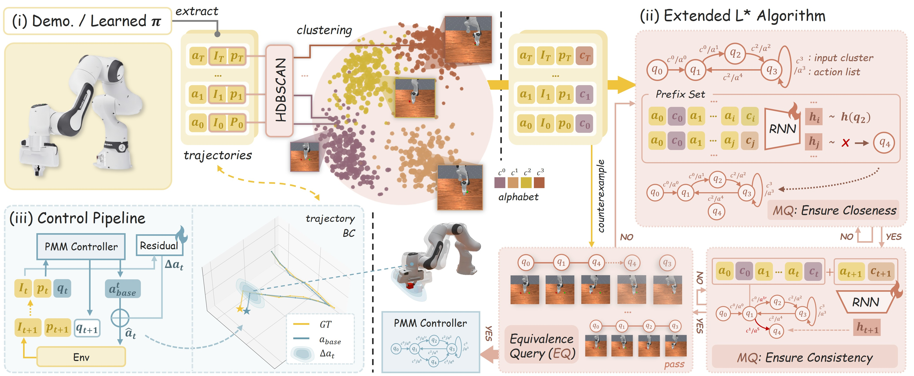
ENAP follows a three-stage pipeline—(i) symbol abstraction, (ii) structure extraction via an extended L*, and (iii) bi-level control—to learn structured policies from demonstrations. This design yields an interpretable probabilistic Mealy machine (PMM), which provides coarse task-level structure for downstream policy network.
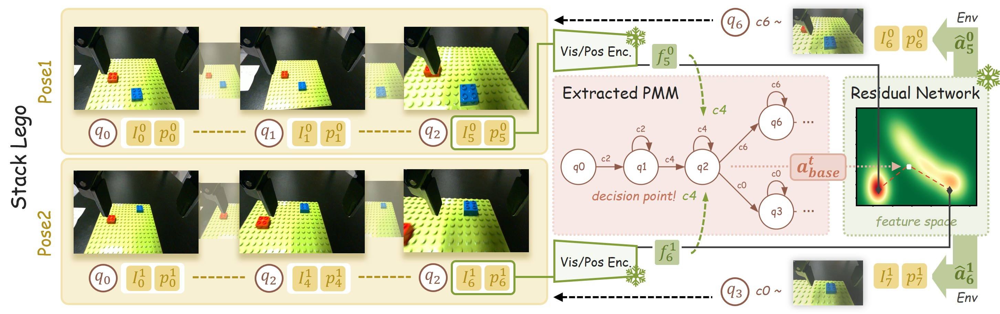
ENAP resolves multi-modal decisions by leveraging a learned state machine and observation-conditioned residual network. At decision points, the PMM captures the available logical branches, while the residual network uses the current observation to steer execution toward the branch consistent with the scene.
| Method | Param (M) | DualStack | Peg |
|---|---|---|---|
| Cube (%) | Insert (%) | ||
| Oracle | 2.98 | 98.3 ±0.4 | 86.7 ±0.8 |
| Transformer | 63.81 | 38.7 ±6.0 | 51.8 ±5.5 |
| GMM | 46.11 | 73.6 ±2.3 | 53.1 ±2.6 |
| Diffusion Policy | 114.39 | 41.2 ±7.2 | 31.1 ±6.8 |
| OpenVLA | 7652.10 | 69.8 ±2.0 | 42.3 ±2.8 |
| \(\pi_0\) | 3288.52 | 73.4 ±1.2 | 51.6 ±1.4 |
| ENAP (Oracle) | 2.66 | 98.8 ±0.3 | 85.6 ±0.6 |
| ENAP* (DINO) | 22.94 | 76.0 ±2.0 | 63.2 ±2.4 |
| Method | Seq. (%) | Hier. (%) | ||
|---|---|---|---|---|
| 3/5 | 5/5 | 3/5 | 5/5 | |
| FLOWER | 91.0 ±0.6 | 90.6 ±0.5 | 90.8 ±0.7 | 15.9 ±0.4 |
| ENAP (FLOWER) | 97.0 ±0.4 | 96.8 ±0.3 | 95.5 ±0.5 | 28.2 ±0.6 |
| Method | Param (M) | Speed (ms) | Stack | Pick | Hanger |
|---|---|---|---|---|---|
| Lego | Place | Task | |||
| \(\pi_{0.5}\) | 3403 | 6841 | 58.82 | 76.47 | 64.71 |
| ENAP* (DINO) | 23 | 281 | 88.24 | 94.12 | 94.12 |
ENAP consistently achieves stronger performance–efficiency trade-offs than prior baselines across complex manipulation, long-horizon TAMP, and real-world evaluation, while using substantially fewer parameters and enabling structured interpretation.
Click a task tab on the left to play videos.
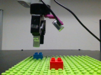
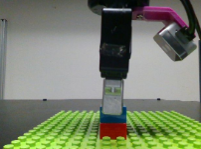
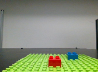
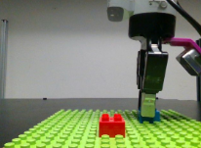
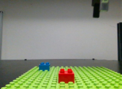
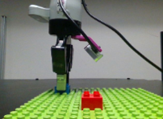
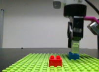
StackLego is a high-precision assembly task where a blue brick must be placed onto a fixed red brick without force feedback, evaluated by graded stacking success.
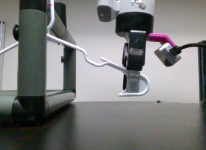
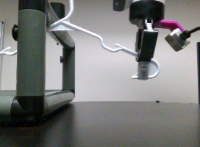
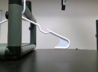
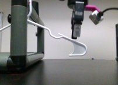
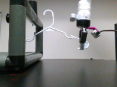
Hanger is a manipulation task requiring the agent to unhook a hanger and transfer it across an obstacle to the opposite side of a rack.
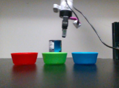
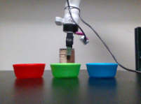
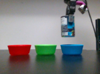
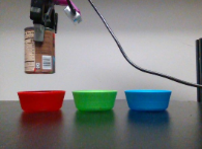
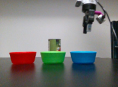
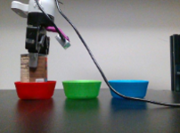
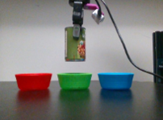
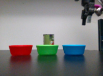
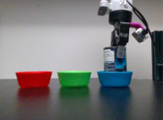
MultiGoalPickPlace is a sorting task where the agent must match and place multiple colored cans into their corresponding bowls.
We visualize real execution together with the extracted PMM and discovered clusters, showing how ENAP recovers interpretable task phases and branching structure for high-precision manipulation (Real-time PMM Transition: visited nodes and edges are highlighted in blue).
| Metric (%) | DP | GMM | \(\pi_0\) | ENAP (Oracle) |
|---|---|---|---|---|
| Either | 0.41 ±0.05 | 0.50 ±0.05 | 0.25 ±0.02 | 0.94 ±0.03 |
| Nearest | 0.38 ±0.07 | 0.38 ±0.03 | 0.13 ±0.04 | 0.84 ±0.02 |
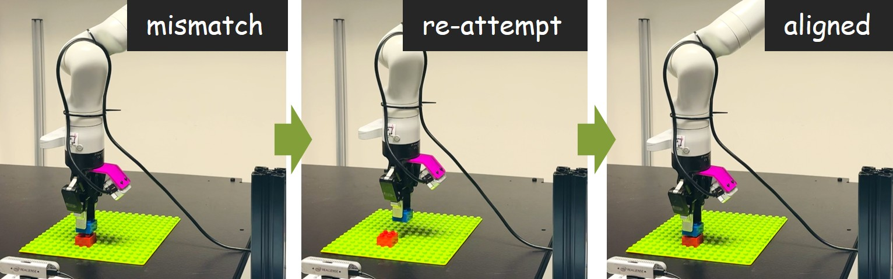
Generalization via Policy Mixtures: ENAP separates mixed demonstrations into distinct logical branches while preserving shared skills. This allows a single policy to handle multiple valid strategies.
Recovery via Structural Loops: ENAP can enable autonomous retry behavior. When execution does not trigger the next phase, the controller can remain in the same phase and re-attempt correction.
@article{pan2026emergent,
title={Emergent Neural Automaton Policies: Learning Symbolic Structure from Visuomotor Trajectories},
author={Pan, Yiyuan and Luo, Xusheng and Hu, Hanjiang and Yu, Peiqi and Liu, Changliu},
journal={arXiv preprint arXiv:2603.25903},
year={2026}
}